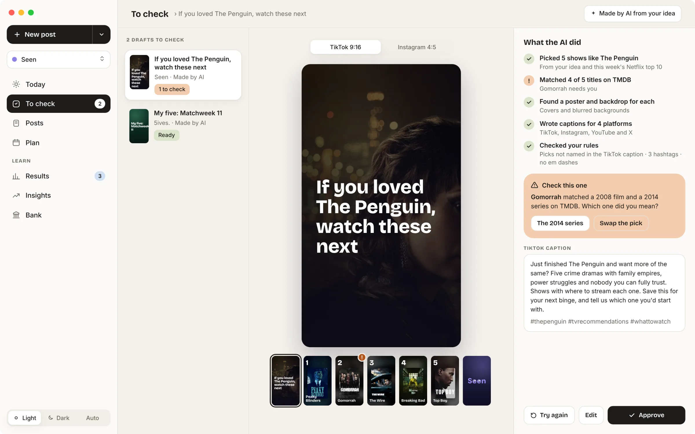
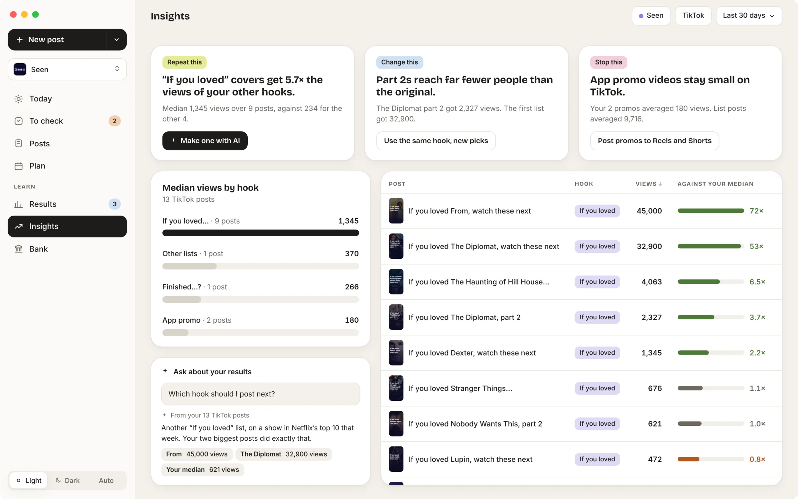
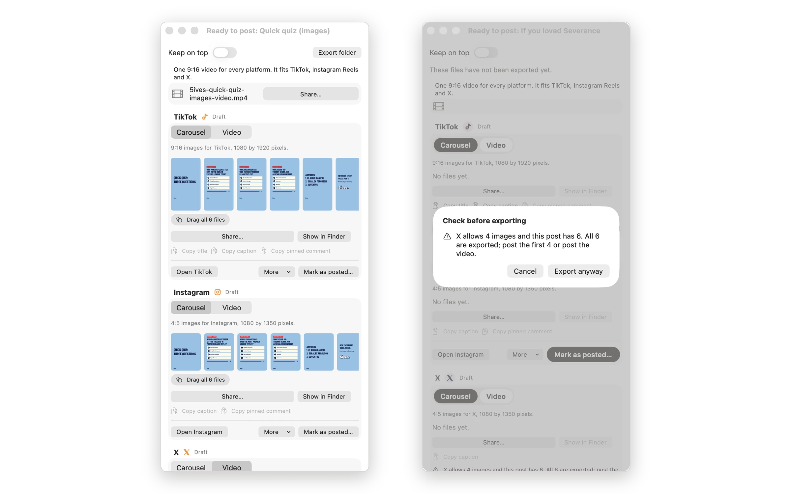
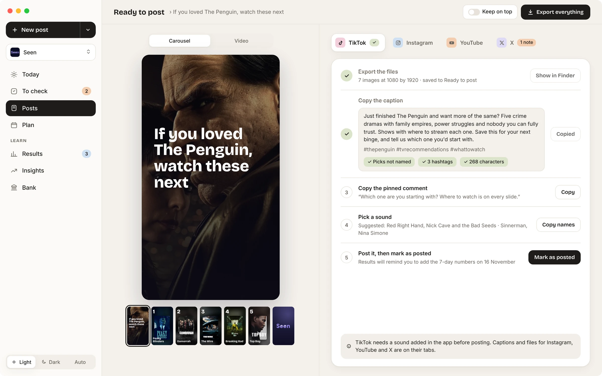
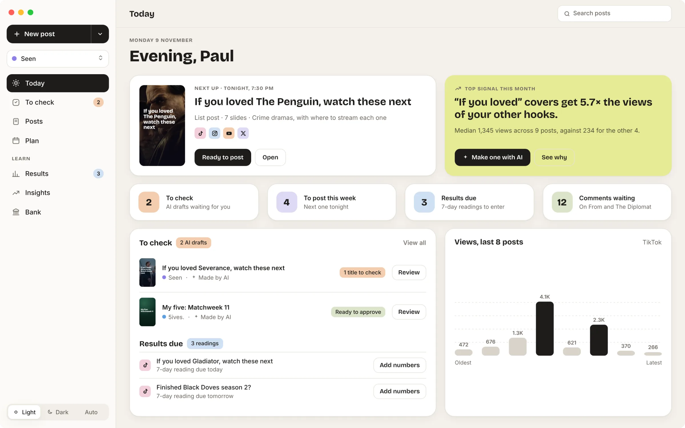
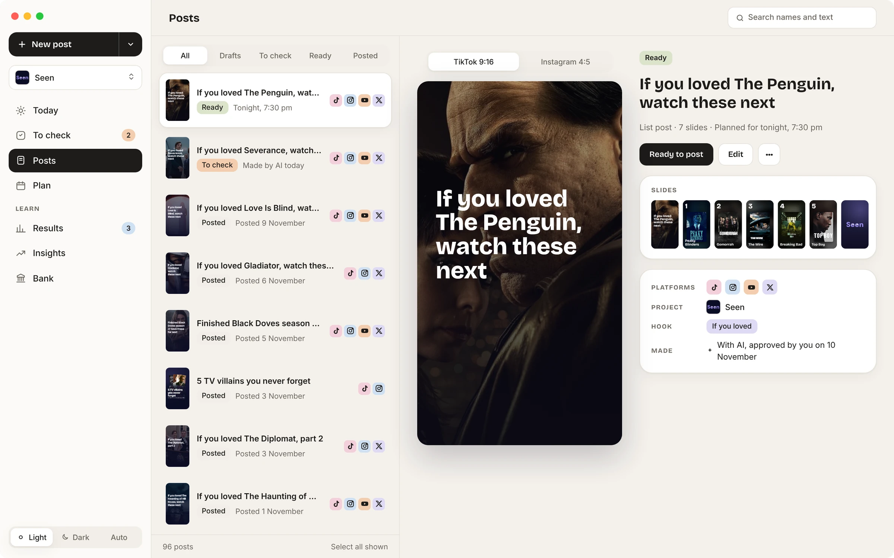
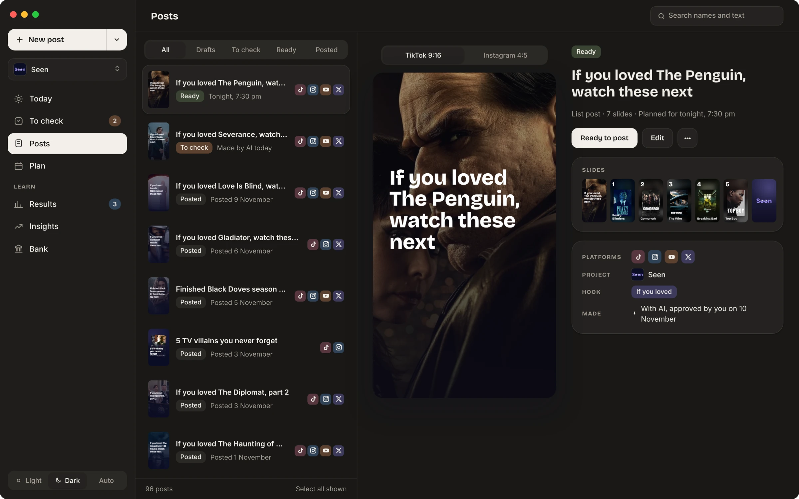

Problem
I make social posts for several apps. Keeping each one on brand and consistent took too long.
What I did
I designed and built a Mac app to run social media for my apps. It stores each app’s brand, uses templates to keep posts consistent, and turns an idea into posts with captions and music suggestions. I review, schedule on a timeline and export for TikTok, Instagram, X and YouTube Shorts.
I designed it, built it and set its rules. I wrote a short spec for each feature, about 20 in all, tested every build on my own posts, and kept a log of each design decision and why I made it.
Outcome
Used for Seen’s TikTok. Early posts got about 80 views. The top post has reached 69,000 views and 3,326 likes.
Screens show sample data.
Sunset stores the brand and context for each app. Every post starts there.
I type an idea. The AI turns it into posts with captions and music suggestions. Templates keep the posts consistent.
I review every post before it is scheduled.
I schedule posts on a timeline. Then I export them for TikTok, Instagram, X and YouTube Shorts.
Sunset shows which hooks get the most views, and turns that into ideas for the next post.
Nothing the AI makes goes out without me. Drafts wait in To check with a list of what the AI did and anything it wasn’t sure about. Approving a post saves a record, so each post shows “With AI, approved by you on 10 November” or “By you”.
The AI can’t make up numbers either. When I ask Insights a question, the figures are worked out in code first. The AI must name the post and figure behind each point it makes, and any number it uses that it wasn’t given is listed under its answer.

I used the median, not the average, so one post that takes off doesn’t hide how the rest are doing. Each signal needs at least five posts. Below that, the card says “Not enough posts yet (3 of 5)” instead of showing a number that means nothing. The signups chart shows posts and signups side by side, and says plainly that it doesn’t prove one caused the other.

Posting one video to four platforms meant a lot of copying and pasting, and the old window repeated the same controls for every platform. I redesigned it as one page with a tab for each platform and numbered steps: export, copy the caption, copy the pinned comment, pick a sound, then post and mark as posted. Each step ticks off as I go, so I can see where I’m up to. Warnings sit inside the page rather than in pop-ups, and Keep on top floats it beside the browser while I upload.


TikTok covers parts of the video with its buttons and caption, and tall phones crop the sides. Sunset shows these safe zones on every slide, and won’t export a post with text inside them or with a placeholder like [film] left in. A test renders every slide type to check no text gets cut off.
Sunset makes posts for Seen and 5ives, which look nothing alike. The app itself stays neutral, so the colour comes from each brand’s chips, icons and posts. I set colour tokens for light and dark mode and checked that every text colour meets 4.5 to 1 contrast in both.
The home screen shows what needs me today: drafts to check, posts due, and results to enter.


